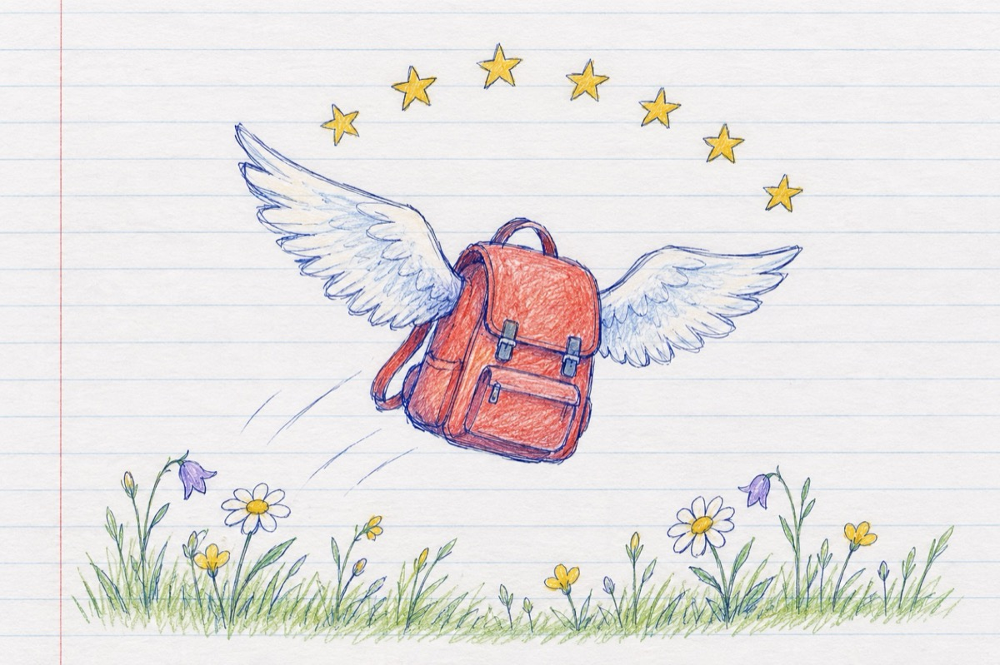

Șapte ani
Șapte în copilărie
Pot fi florile-n câmpie
Dințții ce-au crescut în gură
Primii pași în bătătură
Șapte poate fi o notă
Un voiaj pe trotinetă
O păpușă, o mașină - un avion
Ziua în care ai scăpat un biberon.
Șapte pot fi an de an
Timpii strânși în ghiozdan
Când copilăria zboară
Și-ți cresc aripi pentru școală.
Șapte stele carul mare
Bolta cerului le are
Visele de viitor
Ca savant, țăran sau mare cuceritor.
Șapte mări și țări să-ntinzi
Lumea-ntreagă să cuprinzi
Totul este în zadar și n-ai liniște în viață
Dacă nu ai reușit să ai șapte ani de-acasă!
Vasile Groza